אפליקציית Android בגרסה 1.0.5 · מכשיר אמיתי Google Pixel 6 · סביבת בדיקות · נובמבר 2026
הדוח מתמקד בחוויית המשתמש, בעיצוב ובמבנה המערכת. הוא אינו רשימת באגים (QA).
תקציר
ZIXE היא מערכת עשירה ביכולות עם בסיס עיצובי נקי ומודרני. התהליכים המרכזיים — מכירה מהירה, קביעת פגישה על ידי לקוח בעמוד העסק, התראות לבעל העסק — עובדים וקצרים. החולשות העיקריות הן בעקביות: מבנה ניווט שבו הכול נפתח כחלון צף, מיתוג לא אחיד (ZIXE מול EESEK), התאמה חלקית למסכי Android מודרניים, ומבנה מערכת שבו חלק מהנתונים העסקיים נשמרים רק על הטלפון.
תחום
ציון (1–5)
במשפט אחד
מבנה וניווט
3
תפריט תחתון ברור, אבל כל המסכים הם חלונות צפים, וכפתור «חזור» של Android סוגר את האפליקציה.
מסך הבית
3.5
מציג את המידע החשוב, אך עמוס, וחלק מהמדדים מטעים כשאין נתונים.
מכירה מהירה
4
שני שלבים, ברור ומהיר (כחצי שנייה לשמירה).
פגישות ויומן
3
יכולות רבות, אבל ברירות מחדל ושדות לא ברורים בטופס.
קטלוג מוצרים ושירותים
2.5
מציג קטגוריות של כל סוגי העסקים, לא רק של העסק עצמו.
עמוד העסק הציבורי וקביעת פגישה
4
תהליך מצוין בארבעה שלבים, אך המיתוג בעמוד ישן (EESEK).
עיצוב ושפה חזותית
3
נקי ומודרני, עם חוסר עקביות באייקונים, בכפתורים ובמתגים.
טקסטים, RTL ושפות
3.5
תמיכה בעברית, אנגלית וערבית; יש תקלות כיוון וניסוח.
נגישות
2
כפתורי אייקון ללא תוויות, חלונות לא מסומנים כמודאליים, טקסט נחתך בהגדלת גופן.
ביצועים נתפסים
3.5
רוב המסכים בפחות מ-0.35 שניות; פתיחה ראשונה כ-3.4 שניות.
מבנה המערכת ואמינות
2.5
מכירות רק על הטלפון, אין התחברות ממכשיר חדש, אין ניטור תקלות.
מה עובד טוב
מכירה מהירה: כפתור «מכירה» מרכזי בתפריט, בחירת מוצר, מסך תשלום עם הבהרה ש«בחירת אמצעי התשלום משמשת לתיעוד בלבד» — ברור למשתמש.
קביעת פגישה על ידי לקוח: שירות ← תאריך ← שעה ← פרטים, עם סיכום וכפתורי «שינוי» בכל שלב, מקלדת מספרית לשדה הטלפון, ומסך אישור עם «הוסף ליומן» ו-Google Calendar.
התראה מיידית לבעל העסק (Push) ברגע שלקוח קובע פגישה.
תמיכה בשלוש שפות (עברית, אנגלית, ערבית), מטבעות ומדינות.
תגובה מהירה ללחיצה (פחות מ-0.07 שניות) ואנימציות חלקות.
שפה חזותית נקייה: כרטיסים מעוגלים, צבע מותג כחול, מרווחים נדיבים.
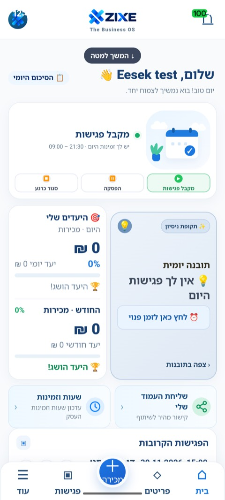
מסך הבית
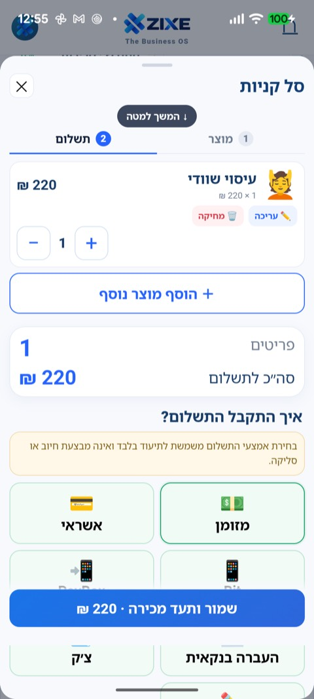
מכירה — מסך תשלום
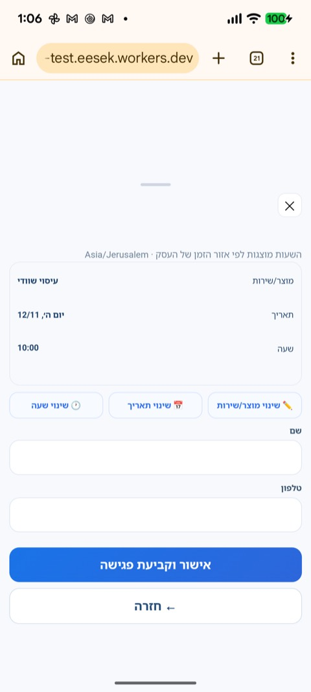
עמוד העסק — סיכום לפני אישור
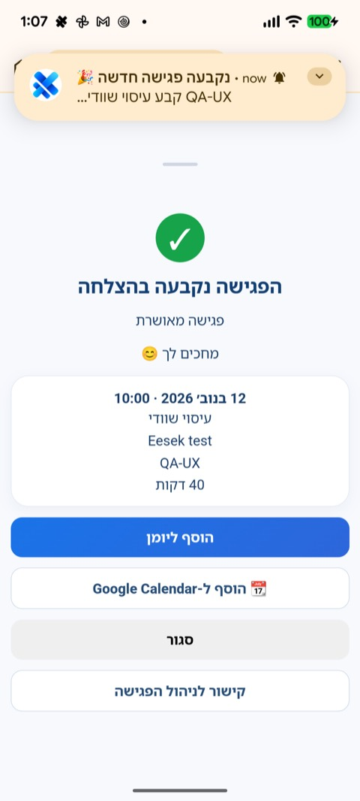
אישור פגישה + התראה לבעל העסק
ממצאים לפי תחום
עדיפות: גבוהה משפיע על רוב המשתמשים או על המותג · בינונית · נמוכה שיפור.
1. מבנה וניווט
גבוההכפתור «חזור» של Android סוגר את כל האפליקציה
מכל חלון — טופס, רשימה, הגדרות — לחיצה על «חזור» יוצאת מהאפליקציה, ונתונים שהוקלדו בטופס אובדים. משתמשי Android מצפים ש«חזור» יסגור את החלון הנוכחי. המלצה: «חזור» סוגר את החלון העליון, ורק במסך הבית יוצא (עם אישור).
בינוניתכל המסכים הם חלונות צפים (Bottom sheets)
גם מסכים מלאים כמו «ניהול פריטים», «פגישות» ו«דוחות» נפתחים כחלון צף מעל מסך הבית, לפעמים בגובה מלא ולפעמים בחצי גובה. אין תחושה של «איפה אני», ואין דרך אחידה לחזור. המלצה: מסכים ראשיים כמסכים מלאים עם כותרת וכפתור חזרה; חלונות צפים רק לפעולות קצרות.
גבוהה«הגדרות העסק» פותח את אשף ההקמה הראשוני ללא יציאה
המשתמש מצפה למסך הגדרות עם הנתונים הקיימים, ומקבל «שלב 1 מתוך 7» עם כפתורי «כניסה לחשבון קיים» ו«הגדרת סיסמה» — ללא כפתור סגירה. המלצה: מסך הגדרות רגיל לעריכת פרטי העסק.
נמוכהתוויות וכניסות לא צפויות
הפעמון בכותרת פותח «פגישות היום» ולא התראות; «הלקוחות שלי» נגיש רק מכרטיס בתחתית מסך הבית; תווית «↓ המשך למטה» צפה מעל התוכן בכל מסך ומסתירה כותרות.
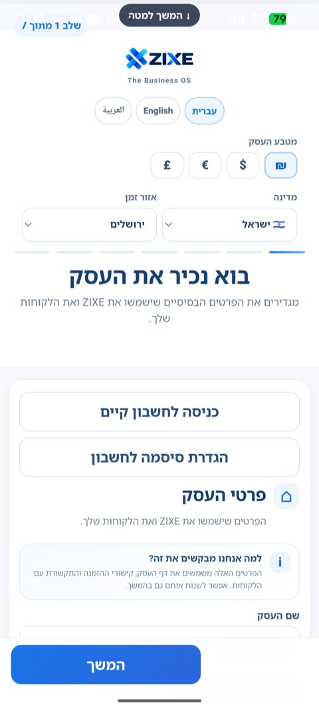
«הגדרות העסק» = אשף הקמה
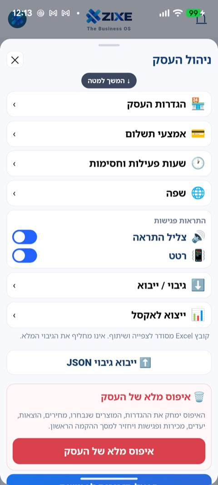
«עוד» — ניהול העסק
2. מסך הבית
בינוניתמדדים מטעים כשאין יעד
כאשר היעד הוא 0 ₪ והמכירות 0 ₪ מוצג «🏆 היעד הושג!» לצד 0% ופס התקדמות ריק. המלצה: כשאין יעד — הצעה «הגדר יעד».
נמוכהעומס וחזרות
המסך הארוך מכיל כ-10 כרטיסים; «הסיכום היומי» חוזר על אותו משפט פעמיים («אין לך פגישות להיום» / «אין לך פגישות היום»); כרטיס «תובנה יומית» חצי ריק. המלצה: לקבוע 3–4 כרטיסים עיקריים ולאחד הודעות.
3. קטלוג, מחירים ומכירה
גבוהההקטלוג מציג קטגוריות של כל סוגי העסקים
לעסק עיסוי מוצגים «פירות וירקות», «סנדוויצ׳ים», «מוצרי חשמל», «כושר» ועוד — רשימה ארוכה שבה הקטגוריה הרלוונטית נמצאת באמצע. המלצה: להציג קודם את הקטגוריות של סוג העסק, ואת השאר תחת «קטגוריות נוספות».
גבוההמחיר שהוגדר לא מופיע עד שמירה ידנית
שירותים שמחירם מופיע במסך העריכה (למשל 220 ₪) מוצגים בקטלוג כ-«0 ₪ · undefined» ובמכירה כ-«נדרש מחיר», ולא ניתן להוסיף אותם למכירה עד שבעל העסק פותח ושומר את טופס המחיר. משתמש חדש לא יבין למה אי אפשר למכור.
נמוכהמינוח
חלון עריכת שירות נקרא «עריכת מוצר»; הקטלוג מערבב «מוצרים» ו«שירותים».
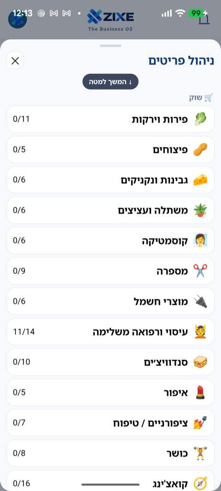
קטגוריות לא רלוונטיות
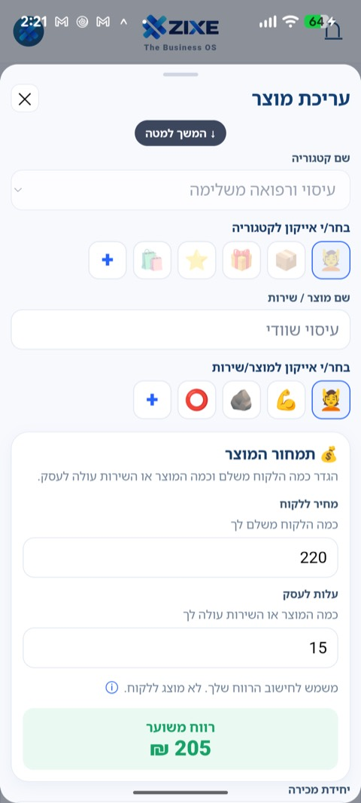
«עריכת מוצר» לשירות
4. פגישות ויומן
בינוניתברירות מחדל בטופס פגישה חדשה
שעת ברירת המחדל היא «עכשיו», ולכן כמעט כל שמירה נתקלת בהודעה «התאריך והשעה שבחרת כבר עברו». השדה נקרא «שם פרטי» אבל הודעת השגיאה מבקשת «שם לפגישה». אין שדה משך, אך בסיכום מופיע «40 דקות». המלצה: שעה פנויה קרובה כברירת מחדל, תווית «שם הלקוח», שדה משך גלוי.
נמוכהמהירות מסכי הפגישות
«פגישות», «פגישות היום» ו«יומן מלא» נפתחים ב-0.7 עד 1.8 שניות — איטיים פי 3 עד 6 משאר המסכים.
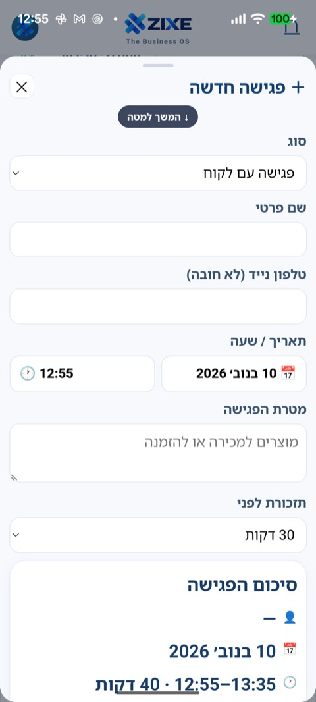
טופס פגישה חדשה
5. עמוד העסק הציבורי (מה שהלקוח של העסק רואה)
גבוההמיתוג ישן בעמוד שהלקוחות רואים
באפליקציה המותג הוא «ZIXE — The Business OS», אבל בעמוד העסק הציבורי מופיעים «EESEK — The Pocket Business OS» ומסך טעינה עם הלוגו «EE». זה העמוד היחיד שלקוחות הקצה רואים, ולכן הוא החשוב ביותר למיתוג.
בינוניתמסך טעינה מבלבל
בזמן הטעינה מוצגים «טוען...» ו«יוצר קישור...» עם כפתור סגירה — טקסט טכני שאינו רלוונטי ללקוח שפתח קישור.
בינוניתמידע חסר ללקוח
אין מחירים לשירותים, אין כתובת או טלפון של העסק, ואין כותרת או מחוון שלבים («שלב 2 מתוך 4») בשלבי ההזמנה. מוצג טקסט טכני «Asia/Jerusalem». כפתור הנגישות הצף מכסה את תמונת השער, והלוגו מכסה חלק משם העסק.
החלטת מוצרהפגישה מאושרת אוטומטית
פגישה שלקוח קובע מאושרת מיד, ללא אישור בעל העסק. מומלץ להחליט במודע אם זו ברירת המחדל הרצויה או אפשרות בהגדרות.
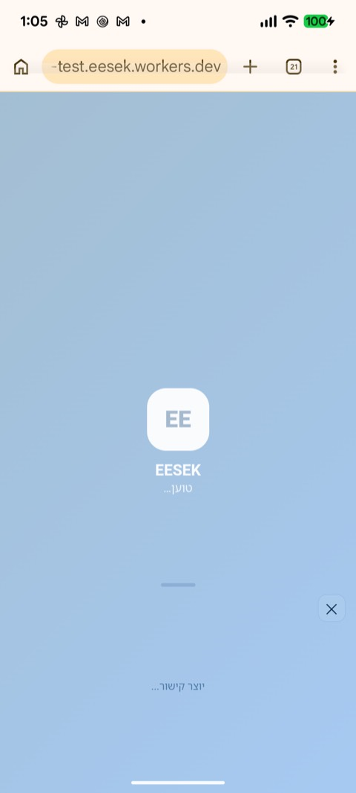
מסך טעינה «EE · יוצר קישור»
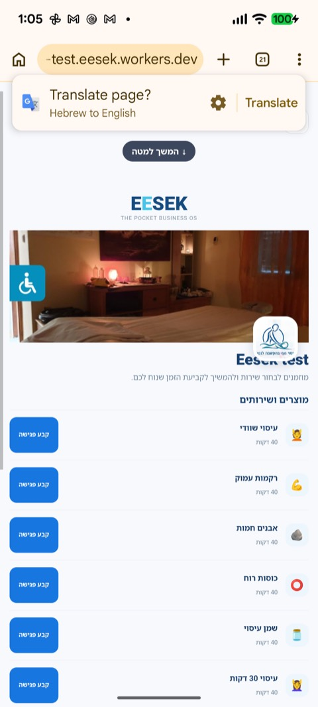
מיתוג EESEK, ללא מחירים
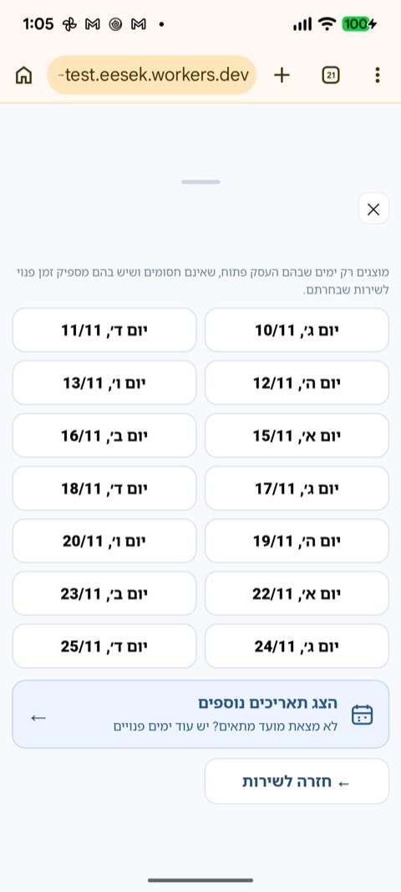
בחירת תאריך ללא כותרת
6. עיצוב ושפה חזותית
גבוההשורת המצב של Android מכסה את כותרת האפליקציה
השעון מכסה את הלוגו והסוללה את הפעמון; החלק העליון של הפעמון לא לחיץ; האייקונים הלבנים של שורת המצב לא נראים על רקע לבן. גם פס הניווט התחתון של המערכת עובר מעל תוויות התפריט. נובע מהתצוגה מקצה לקצה של Android 15 ומעלה.
בינוניתחוסר עקביות ברכיבים
אייקונים מתווי Unicode (▣ ◇ ☰ ☏ ✦) שנראים אחרת בכל טלפון; אימוג׳י לוח שנה שמציג תמיד «July 17»; מתגים בשני סגנונות; סדר «אישור/ביטול» הפוך בין חלונות; התווית של כפתור «מכירה» חתוכה (במיוחד בהגדלת גופן). המלצה: ספריית רכיבים אחידה וסט אייקונים וקטורי אחד.
נמוכהאין מצב כהה
האפליקציה תמיד בהירה, גם כשהטלפון במצב כהה.
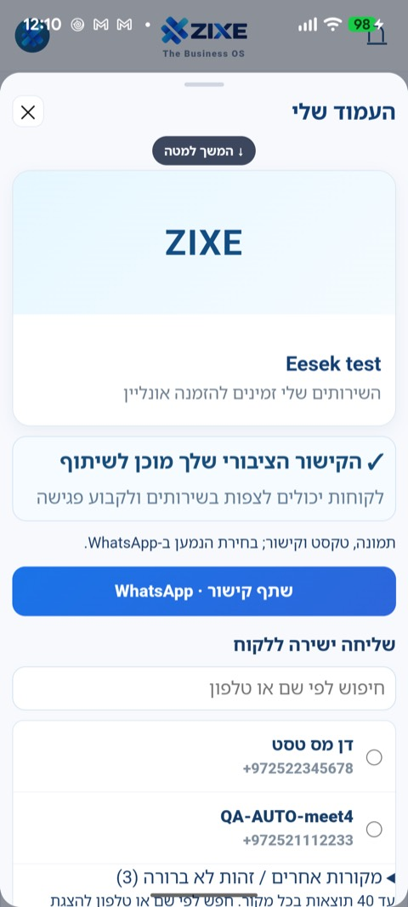
שורת המצב מעל הכותרת
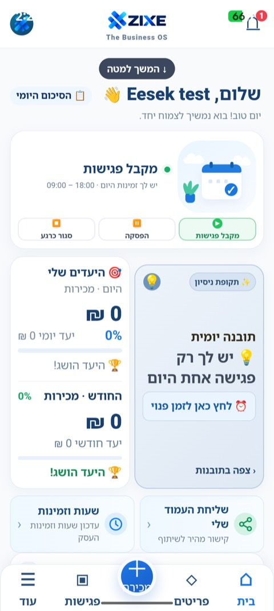
גופן 130% — תוויות נחתכות
7. טקסטים, RTL ושפות
בינוניתכיוון טקסט מעורב
טקסט שמשלב עברית, אנגלית ומספרים מתהפך; הסימן + מופיע בסוף מספר טלפון («972521112233+»); מספרים שליליים מוצגים «50-». בממשק האנגלי: «!Goal achieved», חצים הפוכים ופורמט תאריך אמריקאי לצד ישראלי.
נמוכהניסוח
«1 פגישות», «1 לקוחות»; משפטים מחוברים ללא נקודה; שדות אופציונליים מסומנים בשלוש דרכים שונות («לא חובה», «אופציונלי», «רשות»).
8. נגישות
בינוניתתמיכה חלקית בקורא מסך ובהגדלת גופן
כפתורי אייקון ללא תווית (למשל ▣); חלונות צפים לא מסומנים כמודאליים, כך שקורא המסך ממשיך להקריא את המסך שמתחת; בהגדלת גופן ל-130% טקסטים נחתכים. בעמוד הציבורי קיים כפתור נגישות — אך הוא מכסה תוכן.
9. משוב ומצבי מערכת
בינוניתהודעות שגיאה כלליות ולא במקום
שגיאות בטפסים מוצגות כחלון כללי ולא ליד השדה; ביטול חלון השיתוף של המערכת מציג «לא ניתן לשתף את התמונה» / «יצירת הקובץ או השיתוף נכשלו» — למרות שהמשתמש פשוט התחרט; «קהילה» מציגה תמיד «הקטגוריות התעדכנו. רענן ובדוק את הבחירה» ו«נסה שוב» לא עוזר; אין סימון של מצב לא מקוון.
נמוכהחלון אישור מיותר בשמירת לקוח
גם כששדות החובה (שם וטלפון) מלאים, כל שמירת לקוח מציגה חלון «חסרים כמה פרטים... שמור בכל זאת / חזור לעדכן» בגלל שדות אופציונליים (יום הולדת, סטטוס שיווק). המלצה: להציג תזכורת עדינה בכרטיס הלקוח ולא לעצור את השמירה.
נמוכהשם ארוך שובר את כרטיס «הפגישות הקרובות»
שם לקוח ארוך מוצג בעמודה צרה ונפרש על פני שש-שבע שורות במסך הבית.
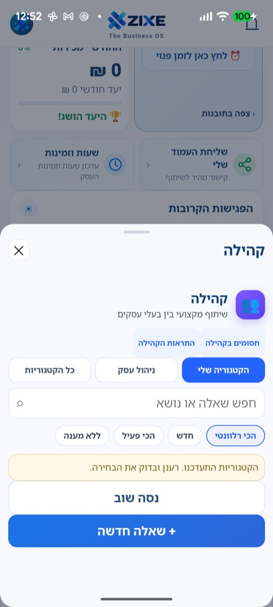
«קהילה» במצב שגיאה קבוע
מבנה המערכת
רכיב
תפקיד
אפליקציית Android (Capacitor 6)
ממשק אינטרנט בתוך WebView; כל הקוד (כ-1.3 MB) בקובץ HTML אחד; תוספים טבעיים ל-Push, SMS/WhatsApp, אנשי קשר ושמירת חיבור מוצפן.
פרטי העסק, שעות, שירותים, פגישות ולקוחות שהגיעו מהקישור, קהילה, מבצעים; סביבות TEST ו-Production נפרדות.
Cloudflare Worker
עמוד העסק הציבורי ותמונות.
Render
חיבור ליומן Google.
Firebase
התראות Push.
גבוההנתונים עסקיים רק על הטלפון
מכירות והוצאות לא נשמרות בענן. אובדן או החלפת טלפון = אובדן היסטוריית המכירות. הגיבוי ידני (קובץ JSON), ולפי תיעוד המפתח הקודם הוא כולל גם שדות של פרטי התחברות.
גבוההאין התחברות ממכשיר חדש
סביבת הבדיקות עובדת רק עם חיבור שכבר קיים בטלפון. בעל עסק שהחליף מכשיר — וגם בודקי Google ו-Apple בתהליך אישור החנות — לא יכולים להיכנס.
בינוניתאמינות ותפעול
אין דיווח קריסות וניטור; שרת היומן בחבילה חינמית «נרדם» (12.5 שניות בבקשה ראשונה); הפעלה ראשונה של האפליקציה כ-3.4 שניות; אין גרסת iOS. הבדיקה הטכנית והאבטחתית המלאה מוגשת בדוח נפרד.
סדר עדיפויות מומלץ
עדיפות
מה לעשות
גבוהה
כפתור «חזור» של Android · שורת המצב ופס הניווט · מיתוג ZIXE בעמוד הציבורי · מחירים שמופיעים מיד במכירה · קטגוריות לפי סוג העסק · מסך הגדרות רגיל במקום האשף · שמירת מכירות בענן · התחברות ממכשיר חדש
בינונית
מסכים מלאים במקום חלונות צפים · ברירות מחדל בטופס פגישה · מחירים, כתובת ומחוון שלבים בעמוד הציבורי · הודעות שגיאה ליד השדות · ספריית רכיבים ואייקונים אחידה · כיוון טקסט מעורב · נגישות לקורא מסך
נמוכה
צמצום מסך הבית · מינוח (מוצר/שירות) · ניסוח ורבים · מצב כהה · הפעמון כמרכז התראות
שיטה: מעבר על כל מסכי האפליקציה במכשיר אמיתי, כולל מסלול מלא של לקוח הקובע פגישה בעמוד העסק הציבורי, מדידות זמני טעינה וקריאת קוד המקור שנמסר. נתוני בדיקה שנוצרו (בשם «QA-…») נמצאים בסביבת הבדיקות בלבד.